AI-Mits＆経営アプリ（freee開発版）の入れ方と、顧問先を切り替えて使う方法 ── Mac
コンサルタント事務所の皆さまへ
この版は、コンサルタントとして顧問先ごとに帳簿を分けて見ていただくための版です。freee とマネーフォワードのどちらにもつなげます。自動では更新されません。新しい版はこのフォルダに同じ形でお渡しします。
対応：Apple シリコンの Mac（M1 以降）
版：1.74.4
入れた数字はすべて、ご自身のパソコンの中だけに置かれます。
1. 入れる
- 配布されたファイルをダブルクリックして展開します
- 出てきた
untendai-client を「アプリケーション」フォルダへ移します
2. 初めて開く
「アプリケーション」フォルダの untendai-client をダブルクリックすると、初回だけ確認の窓が出ます。上の黒い太字で「"untendai-client.app" is an app downloaded from the Internet. Are you sure you want to open it?」と出て、その下に薄い灰色で「Chrome downloaded this file today at 9:19 PM. Apple checked it for malicious software and none was detected.」と出ます（Safari で zip を落としたときは、頭の Chrome が Safari に、時刻は落としたときの時刻になります）。下の2つのボタンのうち、右のボタン（写真では Open）を押してください。「はじめる前に」の画面が開きます。
写真：
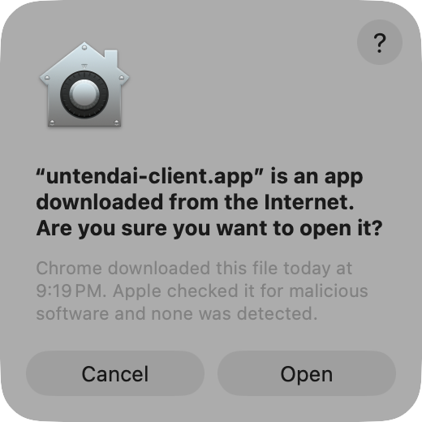
（Chrome で zip を落としたとき）／
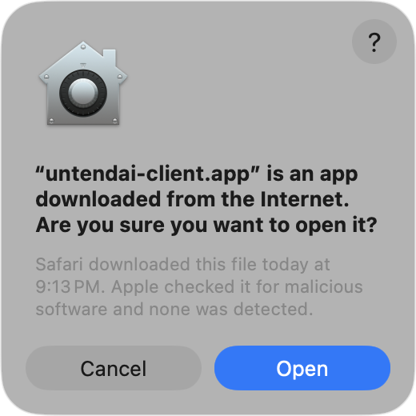
（Safari で zip を落としたとき）
左のボタンは Cancel（開かずに閉じる）です。2回目以降は確認の窓は出ません。
3. 最初の画面（はじめる前に＋3つだけ答える）
- 「はじめる前に」の画面が出ます。見出しの下に「5つだけ確かめてください。1つ目が、このアプリがWeb版と違うところです。」と書かれた5項目（データはパソコンの中だけ／相談時だけ外部AIを通る／個人情報は相談文に書かない／公開はご本人許可時のみ／AI回答は参考）を読み、右下の 「確認しました。はじめる」 を押します
写真：
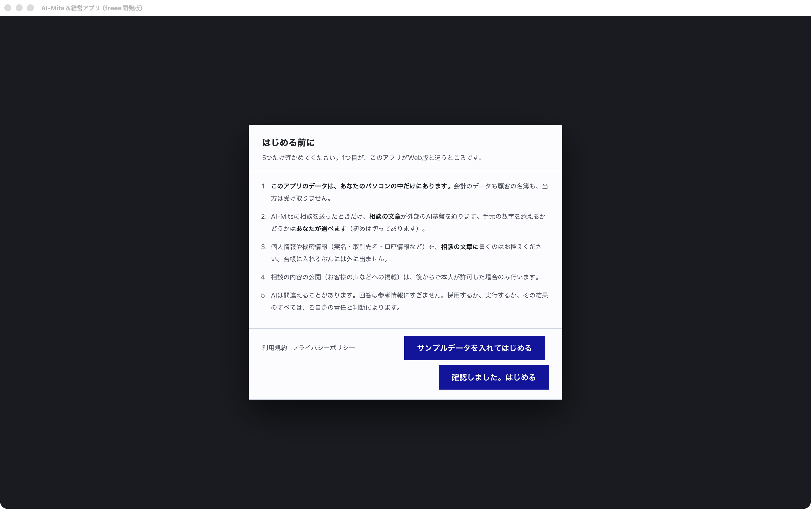
・
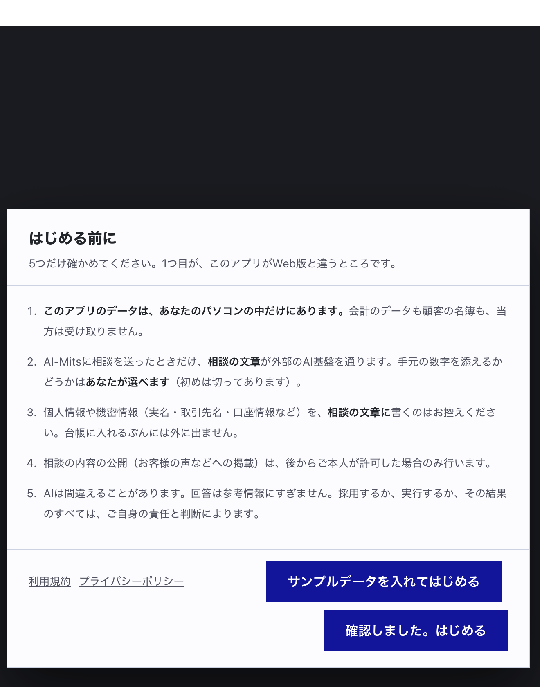
（押すボタンの拡大）
同じ画面に 「サンプルデータを入れてはじめる」 という紺色のボタンもあります。こちらを押すと見本の会社の20ヶ月分の帳簿が入ります。ご自身の数字で始める場合は押さずに、「確認しました。はじめる」 を押してください。
- 「はじめまして／3つだけ、先に教えてください」の画面が出ます。「はじめる」 を押します
写真：
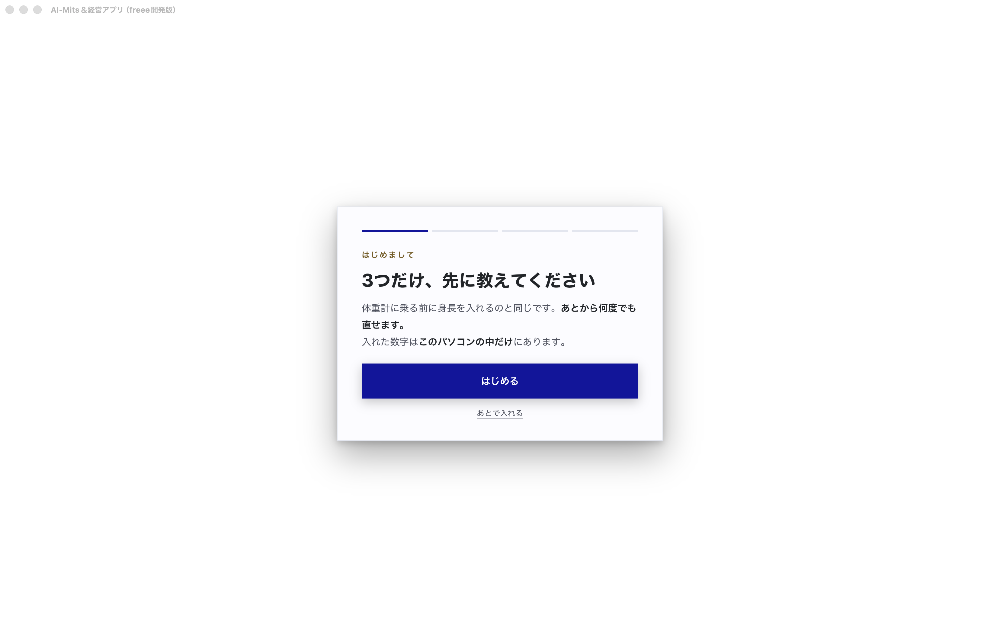
- 「1つめ／何人でやっていますか」に人数（初期値 1）を入れて 「次へ」 を押します
写真：
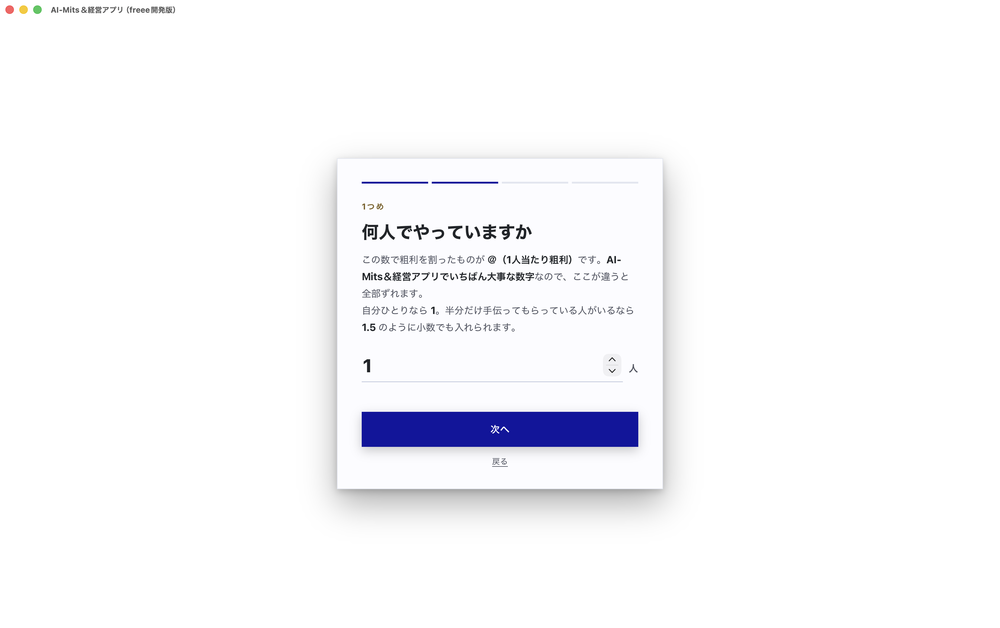
- 「2つめ／＠をいくらにしたいですか」に目標の＠（1人当たり粗利・初期値 2000 万円）を入れて 「次へ」 を押します（下の 1,000万／2,000万／3,000万 のボタンを押してもかまいません）
写真：
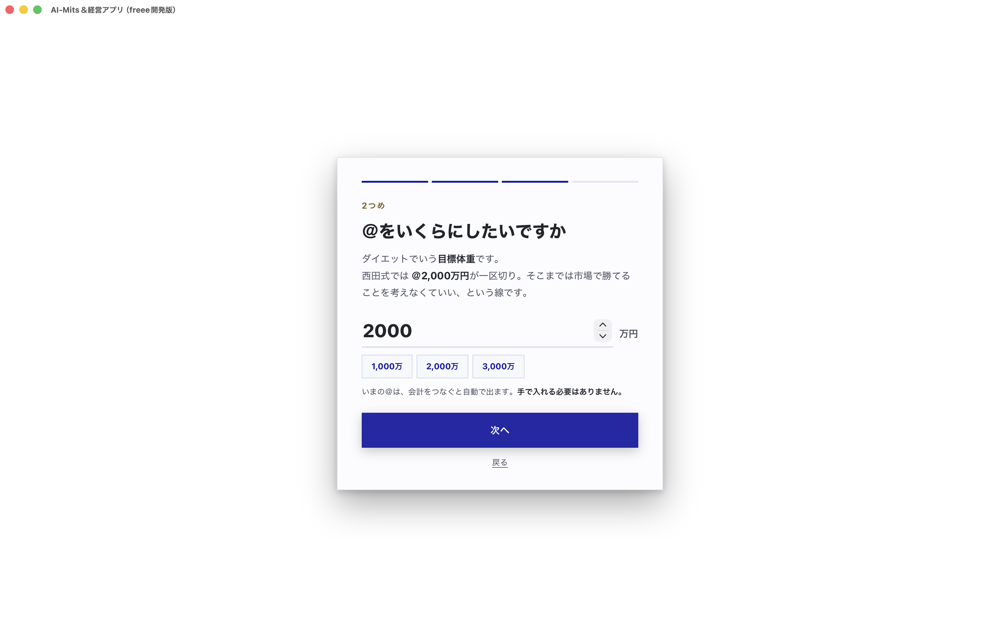
- 「3つめ／いつまでに」で 1年後／3年後／5年後 のどれかを押し、「これではじめる」 を押します
写真：
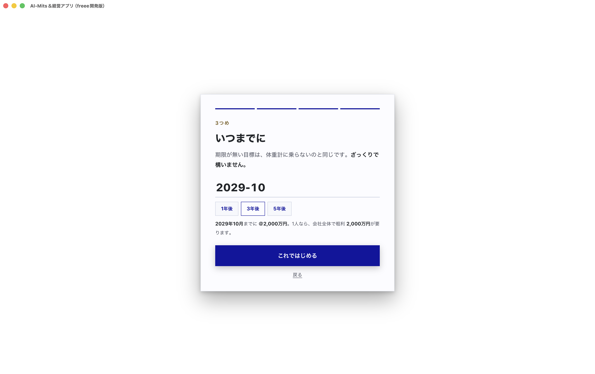
「あとで入れる」を押して飛ばしても、あとから何度でも直せます。
4. 画面の左下からログインする
- 「お金・分析 — 現在位置」の画面が開きます。左のバーの一番下にある 「未ログイン」 を押します
写真：
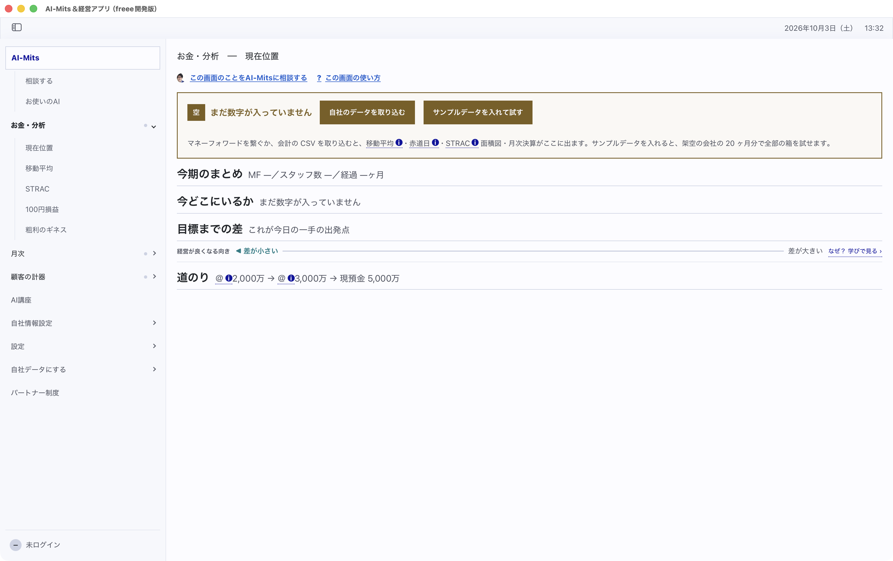
- 上に開く一覧の一番下の 「ログイン」 を押します
写真：
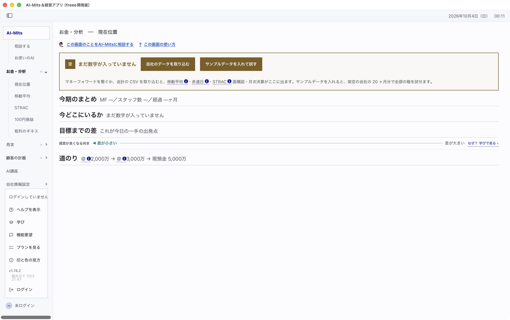
- 「設定 — アカウント」の画面に変わります。「メールアドレス」「パスワード」に、AI-Mits に登録したメールアドレスとパスワードを入れて 「ログイン」 を押します
写真：
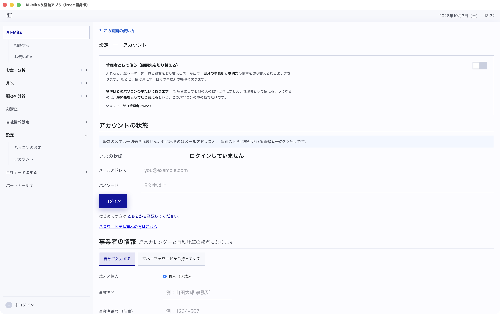
5. 管理者として使う（顧問先を切り替える）
同じ「設定 — アカウント」の画面の一番上に 「管理者として使う（顧問先を切り替える）」 の欄があります（写真：
）。
- 欄の右のスイッチを押して入れます。左のバーの下に「自分の事務所」と書かれた切り替え欄が出ます
写真：
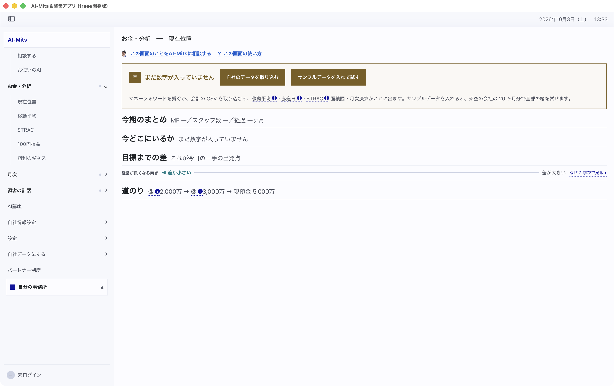
- 切り替え欄を押すと「見る顧客」の一覧が開きます。一番下の 「＋ 顧客を足す」 を押します
写真：
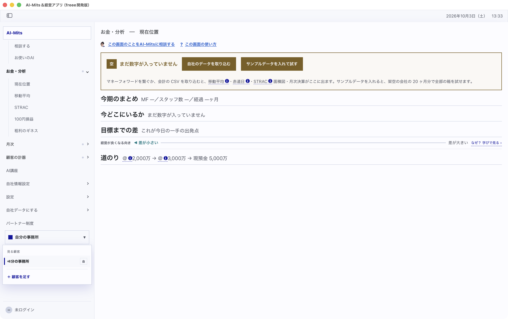
- 「顧客を足す」の窓の「表示名」に顧問先の名前を入れて 「足す」 を押します
写真：
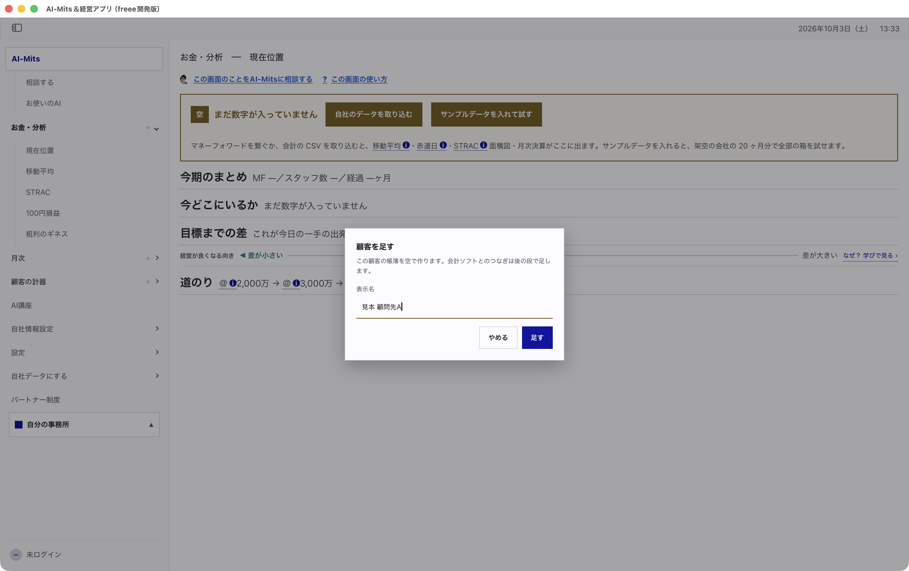
（写真の「見本 顧問先A」は説明用の名前です）
- 足した顧問先に切り替わり、その顧問先用の「3つだけ、先に教えてください」が出ます（3 の2と同じ画面です）。答えるか「あとで入れる」を押します
- 左下の切り替え欄に顧問先の名前が出ます
写真：
顧問先ごとに帳簿が分かれます。切り替え欄で選んでいる顧問先の数字だけが画面に出ます。スイッチを切ると切り替え欄が消え、自分の事務所の帳簿に戻ります。
6. 会計ソフトとつなぐ（顧問先ごと）
切り替え欄で、つなぎたい顧問先を選んでから進めます。
- 左のバーの 「自社データにする」 を押します。下に開く一覧に「マネーフォワードとの連携」「freee との連携」が出ます
写真：
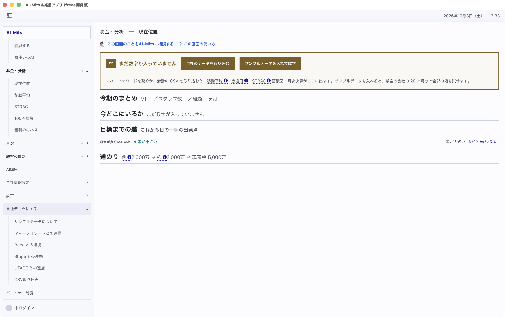
freee の場合
- 「freee との連携」 を押します
写真：
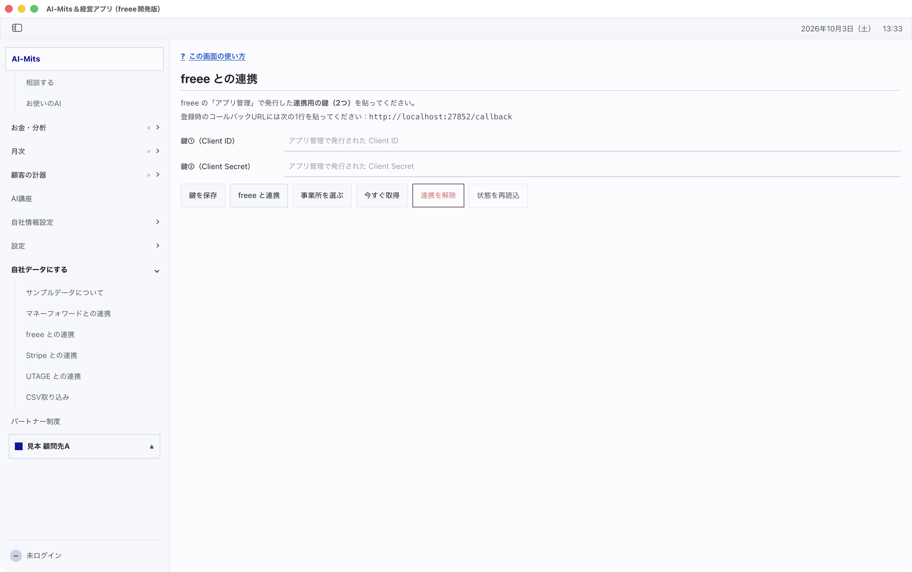
- freee の「アプリ管理」で連携用のアプリを作り、出てきた2つの鍵を 「鍵①（Client ID）」「鍵②（Client Secret）」 に貼って 「鍵を保存」 を押します。アプリを作るときの「コールバックURL」には、画面に出ている次の1行を貼ります
http://localhost:27852/callback
- 「freee と連携」 を押します。ブラウザに freee の画面が出るので、ログインして許可します
- 「事業所を選ぶ」 を押します。「事業所を1つ選んで「この事業所にする」を押してください：」と一覧が出るので、その顧問先の事業所を選び、「この事業所にする」 を押します
- 「今すぐ取得」 を押します
マネーフォワードの場合
- 「マネーフォワードとの連携」 を押します
写真：
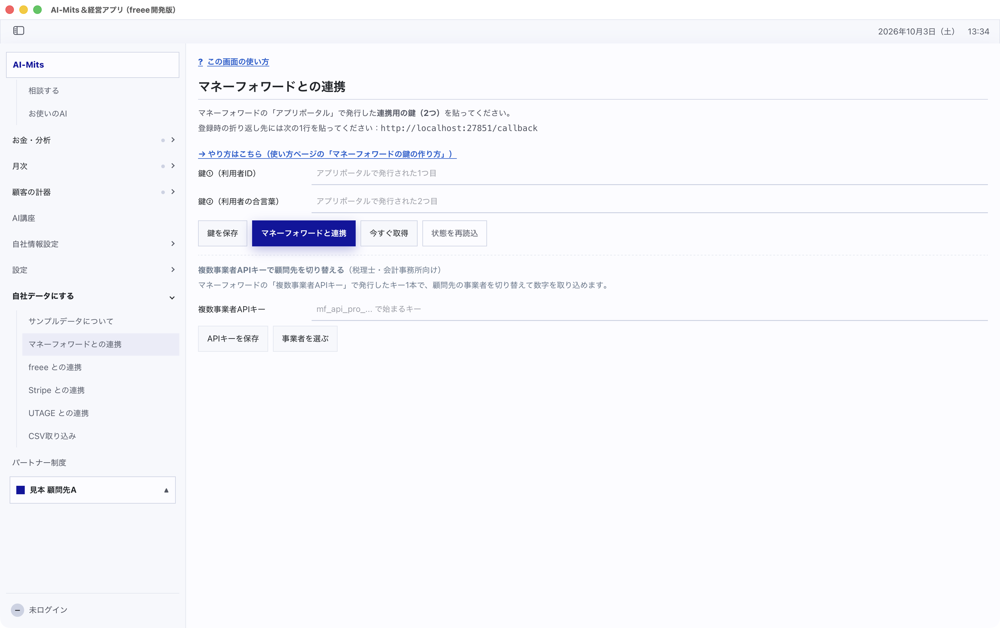
- マネーフォワードの「アプリポータル」で連携用の鍵を作り、「鍵①（利用者ID）」「鍵②（利用者の合言葉）」 に貼って 「鍵を保存」 を押します。登録時の折り返し先には、画面に出ている次の1行を貼ります
http://localhost:27851/callback
鍵の作り方は、画面の 「→ やり方はこちら（使い方ページの「マネーフォワードの鍵の作り方」）」 を押すと開く使い方ページの、「マネーフォワードとの連携」の「2つの鍵を受け取るところ」に書いてあります。同じページに「freee との連携 準備中です。押せません」とありますが、この版では freee もつなげます（手順は上の「freee の場合」のとおりです）。
- 「マネーフォワードと連携」 を押します。画面に「ブラウザが開きます。マネーフォワードで許可を押してください（最大5分待機）…」と出て、ブラウザにマネーフォワードの画面が出ます。ログインして許可を押します
- アプリに戻り、「今すぐ取得」 を押します
税理士・会計事務所としてマネーフォワードの「複数事業者APIキー」をお持ちの場合は、同じ画面の下の 「複数事業者APIキーで顧問先を切り替える（税理士・会計事務所向け）」 の欄を使います。
- 「複数事業者APIキー」にキーを入れて 「APIキーを保存」 を押します
- 「事業者を選ぶ」 を押します。「事業者を1つ選んで「この事業者にする」を押してください：」と一覧が出るので、顧問先の事業者を選び、「この事業者にする」 を押します
- 「今すぐ取得」 を押します
鍵（Client Secret・合言葉・APIキー）は他の人に見せないでください。
7. 気づいたことがあったら
画面の写真と一緒に、西田までお知らせください。バグや「こうなっていると使いやすい」というご要望を集めています。